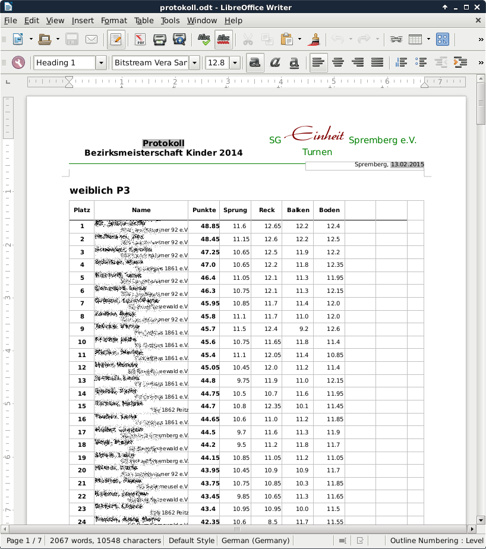

Die Ausgabe von Urkunden und Protokollen ähnelt der Ausgabe von Wettkampflisten. Wichtigster Unterschied ist, dass andere Schablonen verwendet werden.
Procedure 23. Schablonen vorbereiten
Die Schablonen sind zur Zeit nicht Teil von GymCalc. Das ist so gemacht, damit die Schablonen auch leicht geändert werden können. Aus diesem Grund müssen sie aus dem Internet geladen werden und in einem eigenen Verzeichnis abgelegt werden.
-
Lade vorgefertigte Schablonen von http://www.gymcalc.de/schablonen und lege die Schablonen in einem Verzeichis (z.B.
Eigene Dokumente\GymCalc Schablonen) ab. In diesem Verzeichniss sollten sich dann die Schablonen:-
protokoll.odtfür das Protokoll -
urkunde.odtfür die Urkunden
vorhanden sein.
-
-
Das Verzeichniss, in dem sich die Schablonen befinden, muss GymCalc bekannt gemacht werden.
-
Drücke dazu auf →
-
Wähle auf der linken Seite Schablonen
-
Wähle unter Template Directory das Verzeichniss in dem sich die Schablonen befinden.
-
Wähle unter Generation Directory ein Verzeichniss das temporäre Dateien enthält. Dieses Verzeichnis wird von GymCalc verwendet um teilweise ausgefüllte Schablonen zwischenzuspeichern. Das Verzeichniss sollte somit beschreibbar sein. Die dort angelegten Dateien können aber wieder getrost gelöscht werden.

-
Procedure 24. Ausgabe des Protokolles
-
Öffne den "Übersicht"-Editor.
-
Wähle aus dem Menu →
-
Wähle als Vorlage protokoll.odt nur drücke
-
Verändere in der Parameterseite nichts und drücke

-
Wähle ein Verzeichniss und gib einen Dateinamen ein, unter dem das Protokoll abgelegt werden soll. Drücke.
-
Ergebnis ist eine Datei mit ausgewähltem Namen im ausgewählten Verzeichnis. Diese Datei ist im "ODT"-Format, welches mit einem der Schreibprogramme wie "LibreOffice" geöffnet werden kann.

Procedure 25. Ausgabe der Urkunden
-
Öffne den "Übersicht"-Editor.
-
Wähle aus dem Menu →
-
Wähle als Vorlage urkunde.odt nur drücke
-
Wähle in der Parameterseite unter Maximaler Platz der Teilnehmer den Platz bis zu welchem die Urkunden gedruckt werden sollen. Voreingestellt sind Urkunden bis zum 6.Platz, dies kann jedoch durch Angabe eines anderen Platzes geändert werden. Wird an dieser Stelle -1 eingegeben, so werden die Urkunden für alle Teilnehmer gedruckt.
-
Drücke
-
Wähle ein Verzeichniss und gib einen Dateinamen ein, unter dem die Datei für die Urkunden abgelegt werden soll. Drücke.
-
Ergebnis ist eine Datei mit ausgewähltem Namen im ausgewählten Verzeichnis. Diese Datei ist im "ODT"-Format, welches mit einem der Schreibprogramme wie "LibreOffice" geöffnet werden kann. Beachte dabei, dass alle Urkunden in einer Datei gespeichert sind.